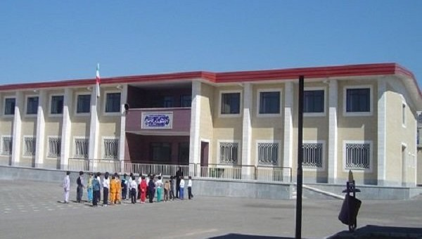

اولین "مدرسه سبز خیرساز" شش ماهه دوم امسال در شهرستان مهاباد در استان آذربایجان غربی به بهره برداری می رسد به گزارش روابط عمومی حامعه خیرین مدرسه ساز کشور ، دومین نشست صمیمی با خیرین مدرسه ساز با حضور رکوعی معاون پشتیبانی، توسعه مدیریت و مشارکتهای مردمی ومحمدرضا قربانی مدیر کل مشارکت های مردمی سازمان نوسازی مدارس کشور و رامین صدیقی خیر مدرسه ساز صبح امروز در دفتر مشارکت های مردمی این سازمان برگزار شد به گزارش خبرنگار جامعه خیرین مدرسه ساز کشور، دراین دیدار معاون پشتیبانی، توسعه مدیریت و مشارکتهای مردمی سازمان نوسازی مدارس کشور از طرح نظرات ارزشمند خیرین مدرسه ساز ابراز خرسندی کرد و گفت: اینکه خیرین ما دغدغه هایی دارند و به وضوح و صراحت نظرات خود را دراین دیدارها مطرح می کنند برای ما یک فرصت است

به گزارش روابط عمومی جامعه خیرین مدرسه ساز کشور؛ رحمانی، مدیرکل نوسازی، توسعه و تجهیز مدارس آذربایجان غربی صبح امروز، در بیستویکمین جشنواره خیرین مدرسهساز استان اظهار کرد: ۵ هزار مدرسه با ۲۴ هزار کلاس درس در آذربایجان غربی برای تحصیل دانشآموزان وجود دارد. وی افزود: آذربایجان غربی رتبه ۲۹ کشوری را در سرانه آموزشی دارد که وضعیت مطلوبی نیست و در واقع برای هر دانشآموز ۴.۱ متر مربع است. رحمانی ادامه داد: سهم اعتبارات استانی در فصل آموزش بیش از پیش بوده است که رئیس سازمان نوسازی کشور نیز به این جهت از استاندار آذربایجان غربی قدردانی کردند. وی یادآور شد: امید است با این روند تخصیص اعتبارات و همراهیهای خیرین مدرسهساز، سرانه فضای آموزشی استان را به میانگین کشوری برسانیم

گزارش خبرگزاری صداوسیما مرکزآذربایجان غربی ،در این جشنواره خیران این شهرستان علاوه بر اینکه ساخت یک مدرسه 6 کلاسه را تقبل کردند بیش از 150 میلیون تومان نیز برای احداث و تعمیر مدارس این شهرستان هزینه کردند عطارد مدیر آموزش و پرورش چایپاره گفت:در چند سال گذشته خیران این شهرستان 11 باب مدرسه در قالب 45 کلاس درس ساخته اند و تحویل آموزش و پرورش داده اند که در این مدارس 1800 دانش آموز مشغول تحصیل هستند . محمدی فرماندارچابهار هم در این مراسم با بیان اینکه در بسیاری از روستاهای شهرستان مدرسه مناسب و استاندارد برای دانش اموزان وجود ندارد از خیرین خواست برای احداث مدارس روستایی کمک کنند . در پایان این جشنواره کلنگ احداث یک مدرسه 6 کلاسه به زمین زده شد